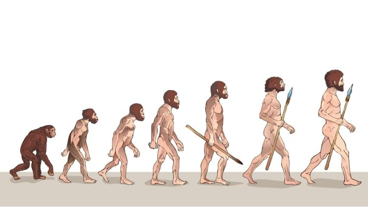

teoria de la evolucion
La edad de la Tierra es de unos 4470 millones de años.123 La primera evidencia indudable de la vida en la tierra data al menos de hace 3500 millones de años,456 durante la Era Eoarcaica, después de que la corteza terrestre comenzara a solidificarse tras la época líquida del eón Hadeico. Se han encontrado fósiles de tapete microbiano en areniscas de 3480 millones de años en Australia occidental.789 Otra evidencia física muy antigua de sustancia biogénica es el grafito contenido en rocas metasedimentarias de 3700 millones de años halladas en Groenlandia.10 Se estima que más del 99% de las especies que han vivido en la tierra –cuyo número supera los cinco millones11– se han extinguido.1213 Los cálculos sobre el número de especies que actualmente pueblan la Tierra oscilan entre 10 y 14 millones,14 de las cuales se han documentado 1,2 millones, y más del 85% aún no se han descrito.15 |
 |
Según indican las similitudes entre los organismos actuales, toda la vida de la Tierra se originó (abiogénesis, panspermia) a partir de un antepasado común del que las especies se han ido diferenciando a través del proceso de la evolución.16 Todos los seres vivos poseen material hereditario en la forma de genes recibidos de sus padres, que después transmiten a su descendencia. En los descendientes hay cierta variación genética debida a la introducción de nuevos genes a causa de cambios aleatorios llamados mutaciones, o por mezcla de los existentes durante la reproducción sexual.1718 La descendencia difiere de los padres en detalles aleatorios. Si estas diferencias son útiles, es más probable que la descendencia sobreviva y llegue a reproducirse: esto significa que más miembros de la siguiente generación presentarán esa diferencia útil y que los individuos no tendrán las mismas posibilidades de reproducirse con éxito. De esta forma, las trazas que aumentan la capacidad de adaptación de un organismo a sus condiciones de vida se hacen más comunes en las poblaciones descendientes,1718 y estas diferencias, acumuladas, resultan en cambios en la población. Este proceso es responsable de la diversidad de formas de vida en el mundo.
Las fuerzas de la evolución se hacen más evidentes cuando las poblaciones quedan aisladas, ya sea por la distancia geográfica u otros mecanismos que impiden el intercambio genético. A lo largo del tiempo, las poblaciones aisladas pueden derivar en nuevas especies.1920
La mayor parte de las mutaciones genéticas no ayudan a los organismos, ni cambian su aspecto, ni les hacen ningún daño. Por el proceso de deriva genética, estos genes mutados se ordenan de forma neutral y sobreviven de una a otra generación por puro azar. Por el contrario, la selección natural no es un proceso aleatorio, porque actúa sobre rasgos necesarios para la supervivencia y la reproducción.21 La selección natural y la deriva genética son partes constantes y dinámicas de la vida, y a lo largo del tiempo han dado forma a la estructura del árbol filogenético.22
El conocimiento moderno de la evolución comenzó en 1859 con la publicación de «El origen de las especies», de Charles Darwin. Además, el trabajo de Gregor Mendel con plantas ayudó a explicar los patrones de la herencia genética.23 Los descubrimientos paleontológicos, los avances en la genética de poblaciones y una red global de investigación científica han proporcionado más detalles sobre el mecanismo de la evolución. En la actualidad, los científicos tienen un buen conocimiento del origen de las nuevas especies (especiación) y han observado este proceso en el laboratorio y en la naturaleza. La evolución es la principal teoría científica que utilizan los biólogos para entender la vida, y se emplea en numerosas materias, entre ellas la medicina, la psicología, la biología de la conservación, la antropología, la criminalística, la agricultura y otras disciplinas socioculturales.
te puede interesar
universo - teorias sobre el origen